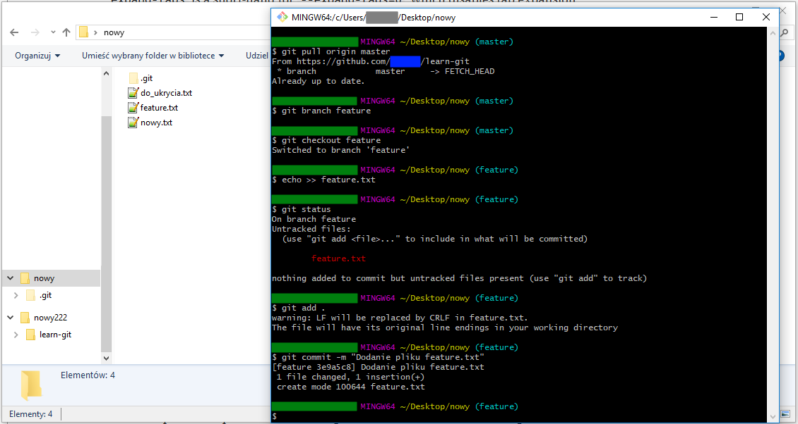
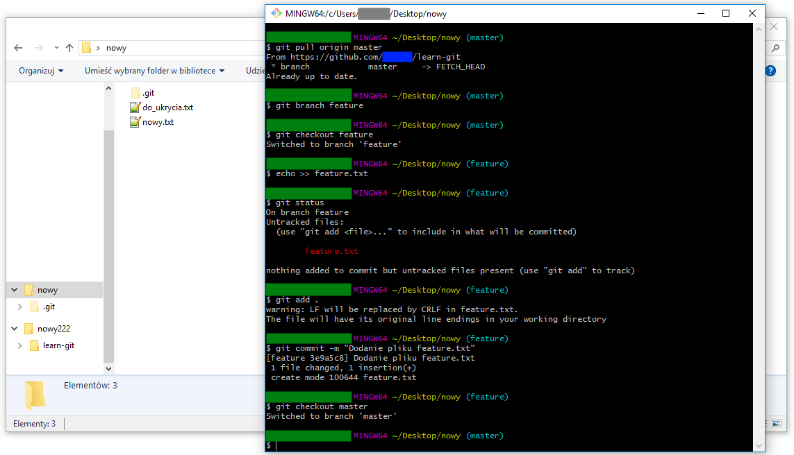
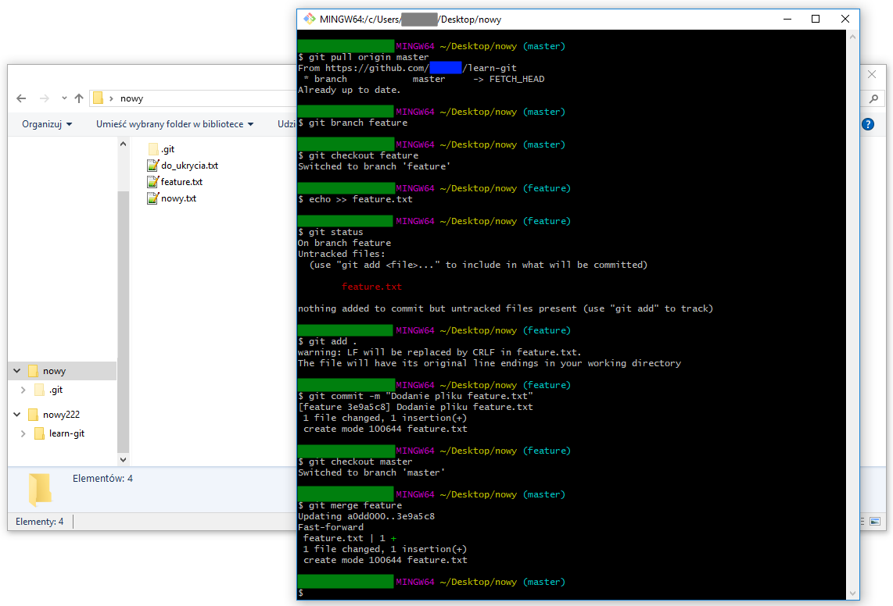
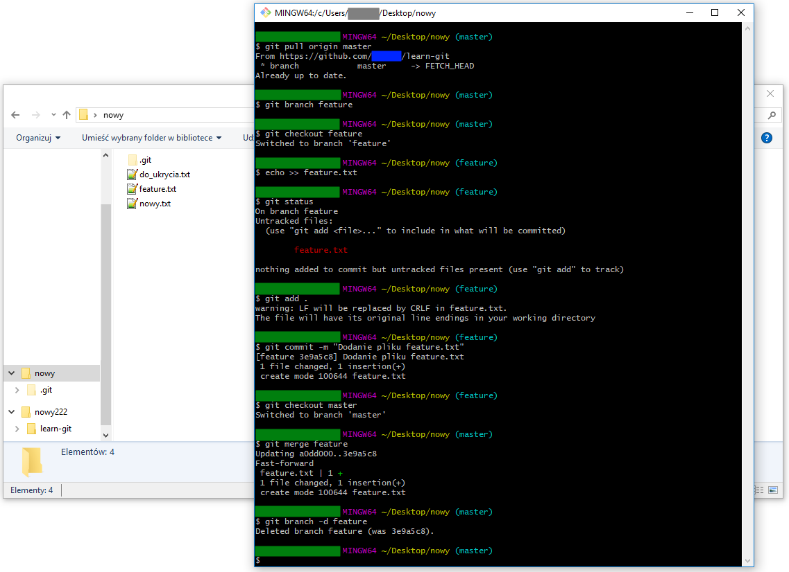

Tworzenie i obsługa gałęzi
- pobieramy projekt z repozytorium zdalnego
git pull origin master
- tworzymy nową gałąź
git branch feature
- przechodzimy na gałąź feature
git checkout feature
- tworzymy nowy plik
echo >> feature.txt
- sprawdzamy bieżący status
git status
- dodajemy pliki do kolejki
git add .
- tworzymy commit
git commit -m "Dodanie pliku feature.txt"widok katalogu gdy jesteśmy na gałęzi feature
- przechodzimy na gałąź master
git checkout masterwidok katalogu gdy jesteśmy na gałęzi master


Łączenie gałęzi
- łączymy gałąź feature z master
git merge featurewidok katalogu po dołączeniu gałęzi feature do master
- usuwamy gałąź feature feature z projektu
git branch -d feature

